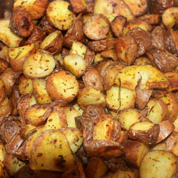

Nos produits, les meilleurs du marchés à tous les prix
« Cet arbuste, dit Cartoufle porte fruict de mesme nom, semblable à truffes, et par d'aucuns ainsi appelé » Olivier de Serres, Le théâtre d'agriculture et mesnage des champs : Lieu Sixiesme, 1600. Ce fûrent les mots fondateurs de Cartoufles
Découvrez nos produits, cuisinez et dégustez !